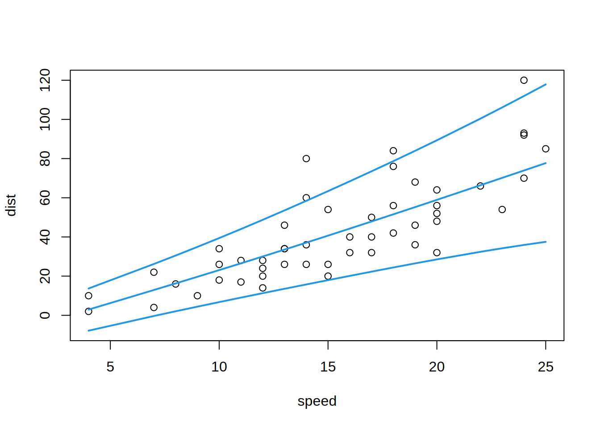
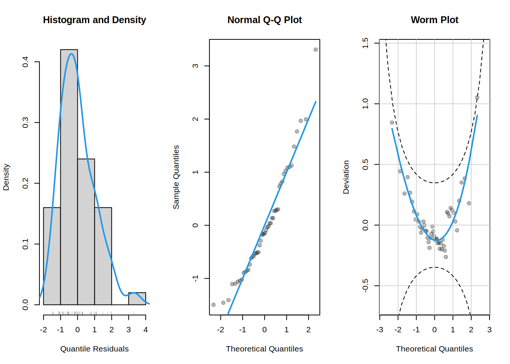
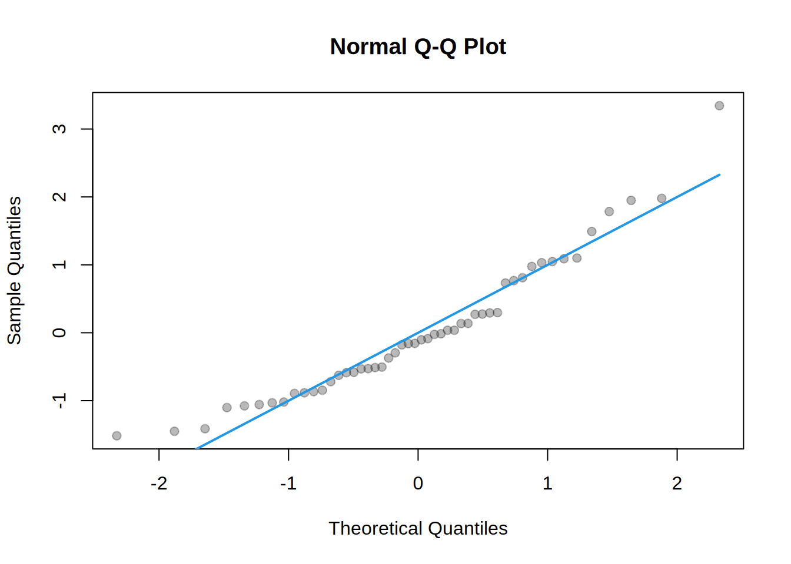

library("gamlss2")
## data
data("cars", package = "datasets")
## fit heteroscedastic normal GAMLSS model
m <- gamlss2(dist ~ s(speed) | s(speed), data = cars, family = NO)GAMLSS-RS iteration 1: Global Deviance = 405.737 eps = 0.128969
GAMLSS-RS iteration 2: Global Deviance = 405.7368 eps = 0.000000 ## plot estimated quantiles
p <- quantile(m, probs = c(0.05, 0.5, 0.95))
plot(dist ~ speed, data = cars, ylim = range(cars$dist, p))
matlines(cars$speed, p, lty = 1, col = 4, lwd = 2)
## normalized quantile residuals
rq <- residuals(m)
summary(rq) Min. 1st Qu. Median Mean 3rd Qu. Max.
-1.521108 -0.700132 -0.126606 0.007646 0.620362 3.333060 attr(rq, "type")[1] "quantile"## response residuals
rr <- residuals(m, type = "response")
summary(rr) Min. 1st Qu. Median Mean 3rd Qu. Max.
-26.9830 -9.5787 -1.6286 0.5081 7.5183 46.1827 ## residuals for new data
nd <- cars[1:10, ]
residuals(m, newdata = nd) 1 2 3 4 5 6
-0.06637941 1.08093249 -1.03911380 1.10995979 -0.01543378 -1.01302454
7 8 9 10
-0.50272020 0.29244930 1.08761879 -0.89314839
attr(,"type")
[1] "quantile"
attr(,"class")
[1] "gamlss2.residuals" "numeric" ## diagnostic plots
plot(rq)
plot(rq, which = "qq-resid")